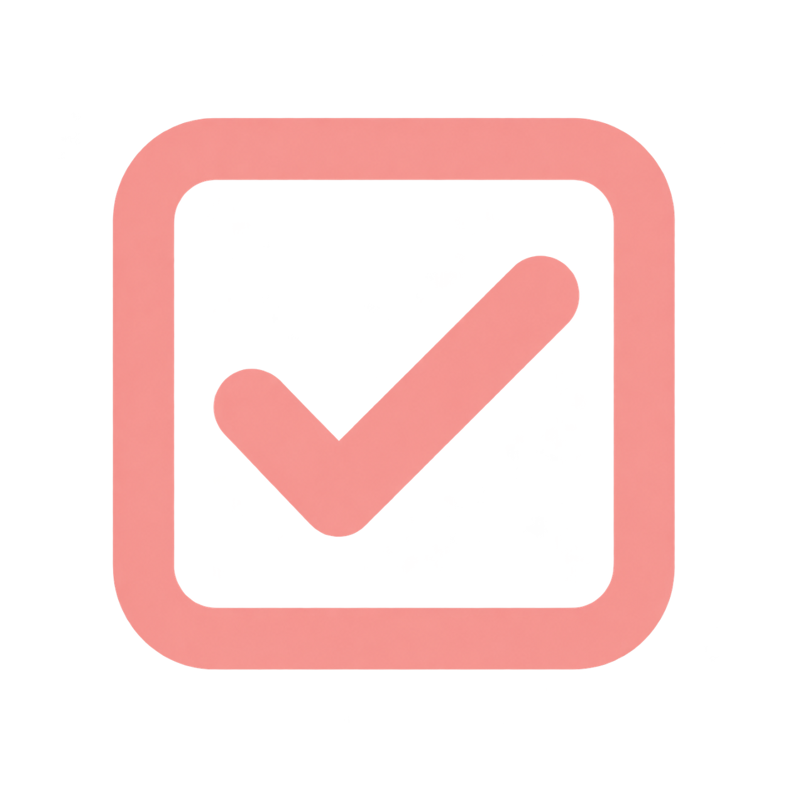

יחידה 6 תקציב ודיווח
דיווח תקציב שנתי
ישנן מספר תחנות לאורך השנה בהן נדרש לבצע פעולות הנוגעות לתקציב השנתי במסגרת התוכנית, לרבות דיווח.

לחצו על התחנות לפירוט הפעולות הנדרשות לביצוע בהתאם לתקופת הזמן בשנה. לחיצה על × סוגרת את כרטיס ההסבר.
לפניכם ארבע תחנות דיווח תקציב לאורך השנה. ניתן לפתוח כל תחנה באמצעות Enter או רווח. לאחר פתיחת תחנה הפוקוס יעבור לכרטיס ההסבר. ניתן לסגור את כרטיס ההסבר באמצעות כפתור הסגירה או Escape. חצי שמאלה וימינה מעבירים בין כפתורי התחנות.
מקדמה
שליחת דרישת תשלום למקדמה (מחצית מסכום התקציב התוספתי) עם חתימת החוזה.
קבלת תשלום המקדמה ממכון מופ"ת ותוכנית אתחלתא.
דיווח חציון ראשון

הגשת דיווח הוצאות לחציון הראשון בצירוף דיווח תוכן.צירוף פירוט הוצאות מלא, כולל חשבוניות וכרטסת הנהלת חשבונות.
אישור הדיווחים על ידי מכון מופ"ת ותוכנית אתחלתא (בהתאם לפעילות).
דיווח חציון שני

הגשת דיווח הוצאות לחציון השני בצירוף דיווח תוכן.צירוף פירוט הוצאות מלא, כולל חשבוניות וכרטסת הנהלת חשבונות.
אישור הדיווחים על ידי מכון מופ"ת ותוכנית אתחלתא (בהתאם לפעילות).
יתרת התקציב
שליחת דרישת תשלום למחצית השנייה של התקציב (או בהתאם למימוש בפועל).
קבלת תשלום היתרה ממכון מופ"ת ותוכנית אתחלתא.